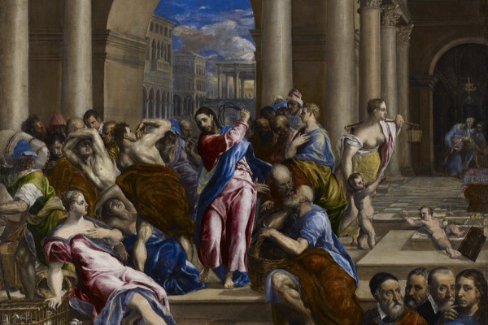
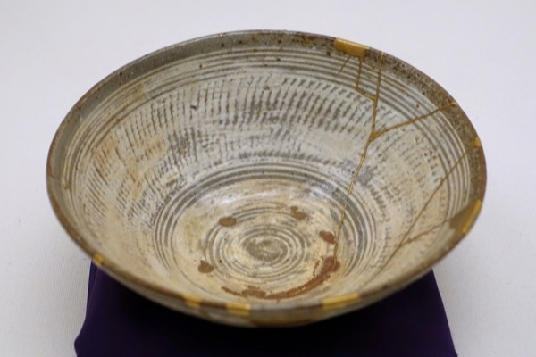

-

Meditation, Mapped
Every kind of meditation in one place, with the hype stripped off: what TM, mindfulness, Zen, and the rest actually are, what the evidence really shows they do and do not do, and how to actually begin, today.
-
The Chemical Path
The oldest shortcut to the mystical experience is a drug, and science is rediscovering it. The old traditions, Huxley's Doors of Perception, the new psilocybin research, and the real risks, all in one place.
-
William James
The 1902 book behind Alcoholics Anonymous. A scientist takes religious experience seriously as evidence, studying conversions and mystical states by what they actually do in a person's life, not by whether their creeds are true.
-
Emmet Fox
A 1934 reading of the Sermon on the Mount as practical mind-power, not a moral scolding: change your thinking and you change your life. The book early AA passed hand to hand before it had one of its own.
-
The Perennial Philosophy
Aldous Huxley's claim that underneath every religion lies one shared truth, assembled from the mystics of every tradition. Almost the secret thesis of this whole shelf, pressure-tested for where it overreaches.
-

Viktor Frankl
A psychiatrist who came through the Nazi camps with one lesson: the men who held on were the ones who kept a reason to live. Meaning, not pleasure or power, is what we are really after, and it stays within reach even in suffering.
-
The Modern Teachers
How the East got sold to the West in the twentieth century, by five charismatic teachers from Alan Watts to Eckhart Tolle, each keeping one big idea: you are it, be here now, wake up. Plus the honest problem of the guru who turns out to be a fraud, and how to keep the teaching without the teacher.
-
When a Path Becomes a Cage
How a search for meaning hardens into a cult: first the thought-reform playbook, then the cases, from Scientology to Jonestown. A clearly labeled case study, not an endorsement.
-

When a Path Becomes a Business
The other failure mode, spirituality with a price tag: est and Landmark, A Course in Miracles, the prosperity gospel, and the line where teaching ends and selling begins.
-

The Spirituality of Imperfection
A quiet modern classic stitched together from stories across every tradition. To be human is to be imperfect, and the cracks are where the spiritual life actually starts, not a flaw to fix first. The book that ties this whole shelf together.
-
The Other Side
Not a book but my own theory, built on the Tao Te Ching's split between the named and the nameless. The two sides are exactly equal, each is drawn toward the other, and nothing, not a rock, not a self, ever crosses the middle, the way nothing with mass ever reaches the speed of light.